Sette opp en virtuell maskin
Høyreklikk på din pool, og velg "New Virtual Machine"
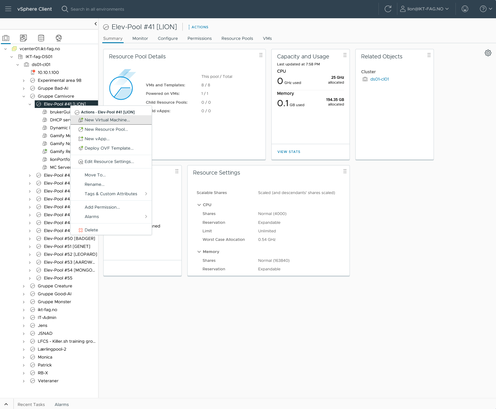Gjennomfør veiviseren ved å velge "New Virtual Machine" på punkt én og klikk neste, deretter navngi VM-en din og klikk neste.
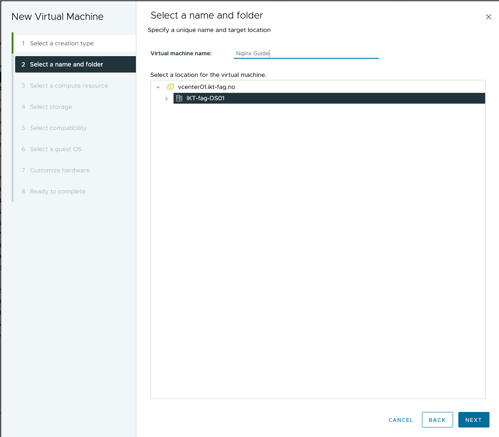Sørg for å velge din egen pool på punkt tre og klikk neste. På punkt fire velger du IKT-fag og klikker neste. På punkt fem bare klikker du neste.

Velg Linux, og Ubuntu Linux (64-bit) på punkt seks.

Velg din RAM og harddisk-størrelse, sørg for å velge Thin Provision under "New Hard disk", Disk Provisioning.
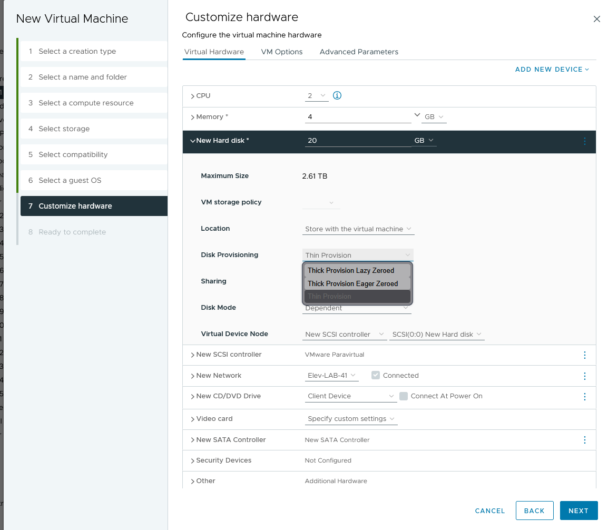Klikk på rullegardinmenyen ved "New CD/DVD Drive" og velg datalager ISO, der du velger ubuntu-22.04.1-live-server-amd64. Kryss også av for Connect at power on.
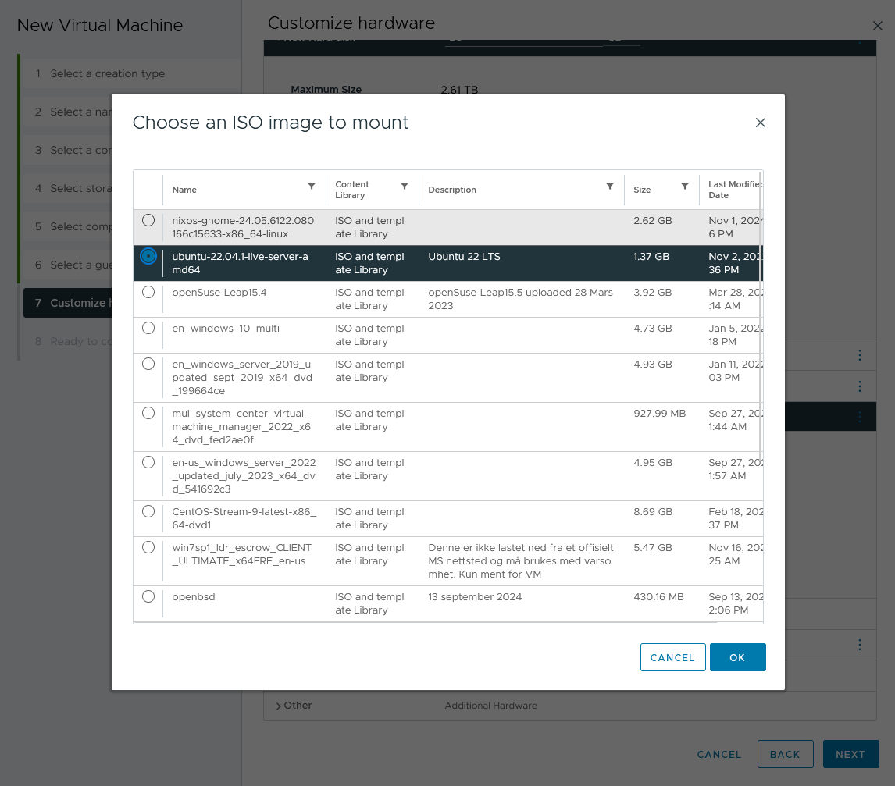Gå inn i VM-alternativer og kryss av for Force EFI setup under Boot options.
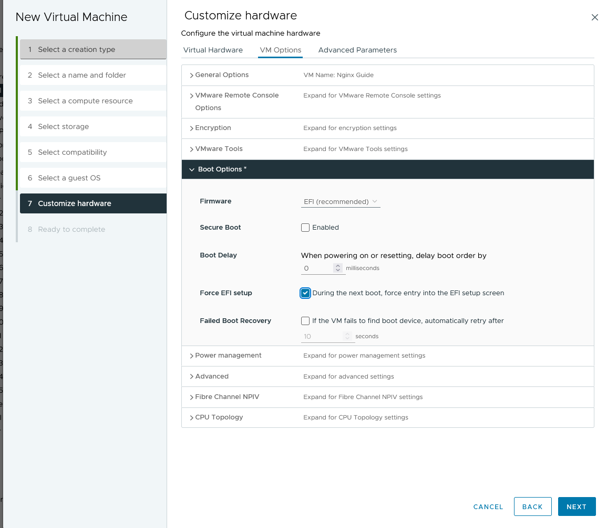Nå kan du klikke neste, se over innstillingene dine og klikke ferdig.
For å starte VM-en din klikker du på play-ikonet og deretter Launch Web console når den er ferdig med oppstarten.
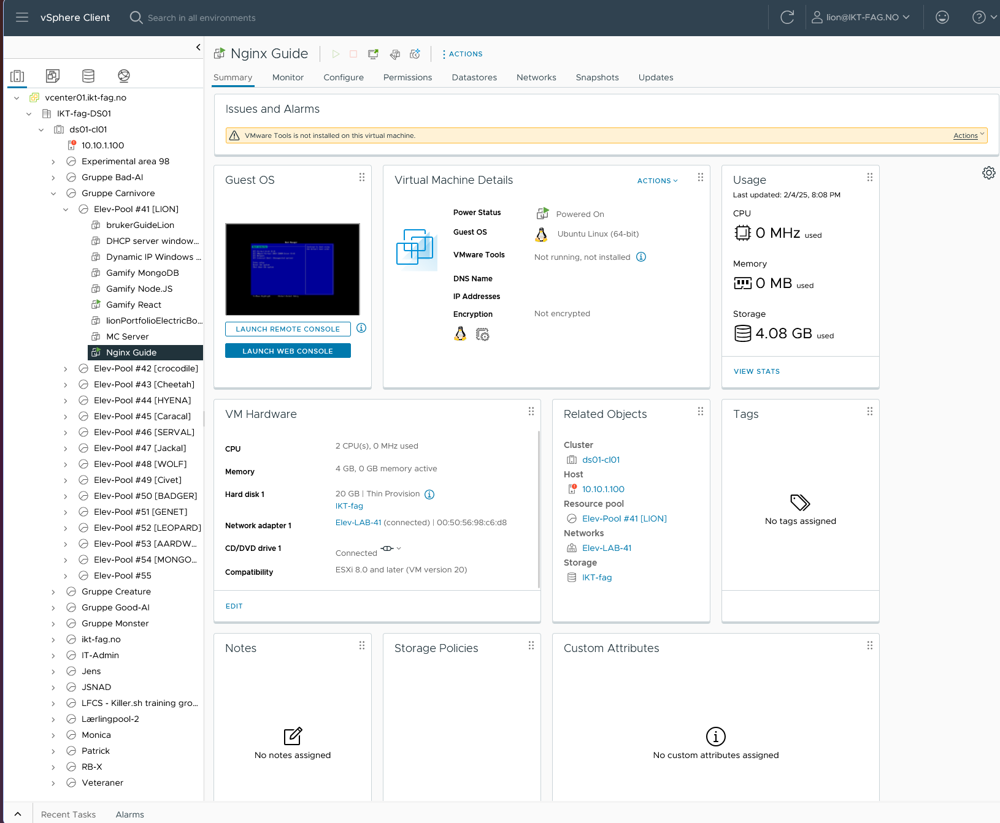Trykk på enter-tasten for å Boot Normally og starte installasjonen av Ubuntu.
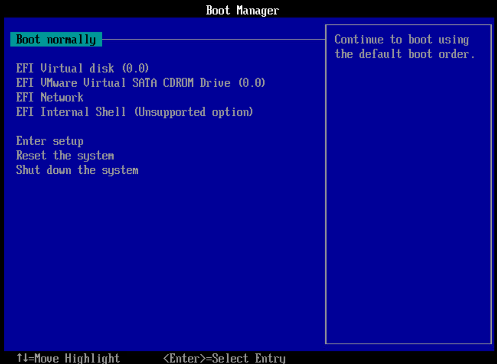Installere Ubuntu
Velg engelsk, deretter velg norsk for tastaturoppsettet. På neste skjerm bare trykk done.
For nettverk velg Edit IPv4 i topp-rullegardinmenyen, og velg manual der du skriver:
- Subnet: 10.12.xx.0/24
- Address: 10.12.xx.xx
- Gateway: 10.12.xx.1
- Name Servers: 10.10.1.20, 1.1.1.1, 8.8.8.8
Klikk deretter neste/done til du kommer til denne skjermen, her velger du continue without updating.
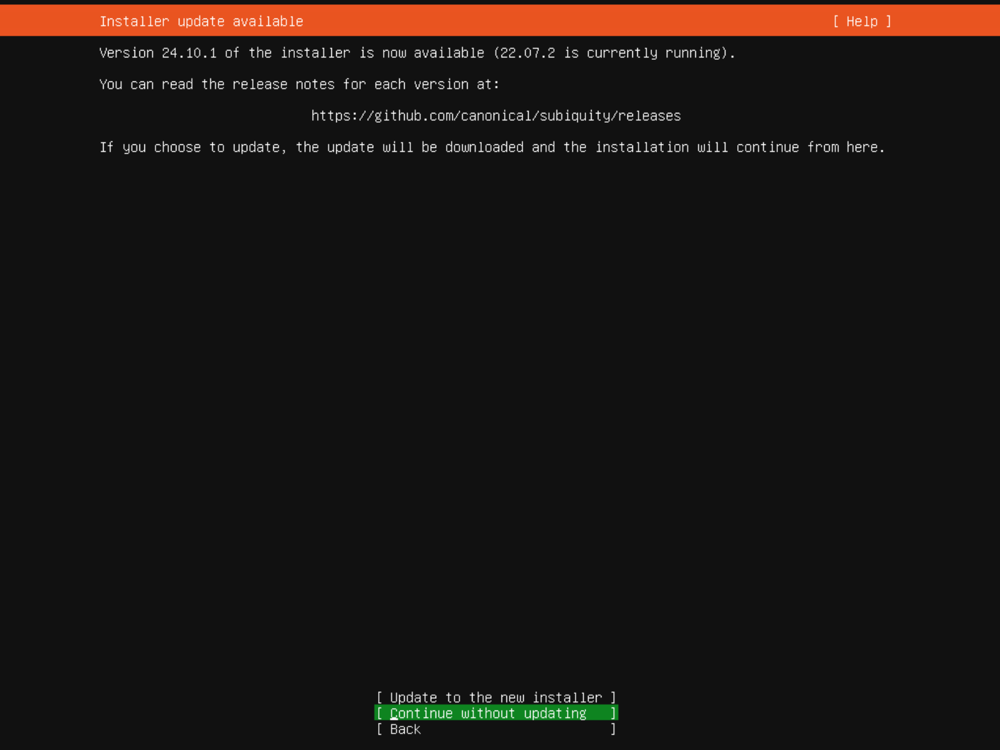Fortsett til du kommer til Profile setup, her velger du navn og passord, ikke glem det!
På neste skjerm kryss av for install openssh server.

Hvis du trenger noen tilleggstjenester velger du dem og klikker neste.
Installasjonen tar ganske lang tid så bare slapp av til "cancel update" dukker opp, klikk på den. Hvis du ikke avbrøt vil du få "reboot now", klikk det, og når du blir spurt trykk enter for å fjerne installasjonsmedium.
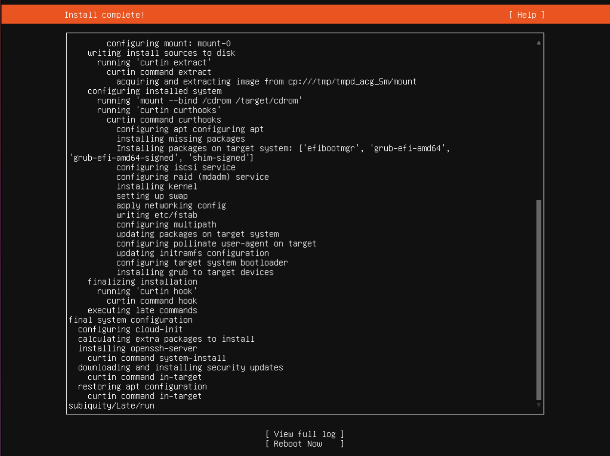Konfigurere SSH
Vi vil nå bytte fra å bruke nettkonsole til din lokale terminal.
I din terminal skriver du "ssh [brukernavn]@10.12.XX.XX", skriv yes og deretter passordet ditt, du er nå logget inn og koblet til, så vi fortsetter med å legge til din SSH-nøkkel for passordfri pålogging.
I din lokale (ikke VM) terminal bruk denne kommandoen for å få din offentlige SSH-nøkkel "cat ~/.ssh/id_rsa.pub" kopier koden og gå tilbake til VM-terminalen der du skal skrive "cd .ssh" deretter "sudo nano authorized_keys". Her limer du inn SSH-nøkkelen fra din lokale maskin.
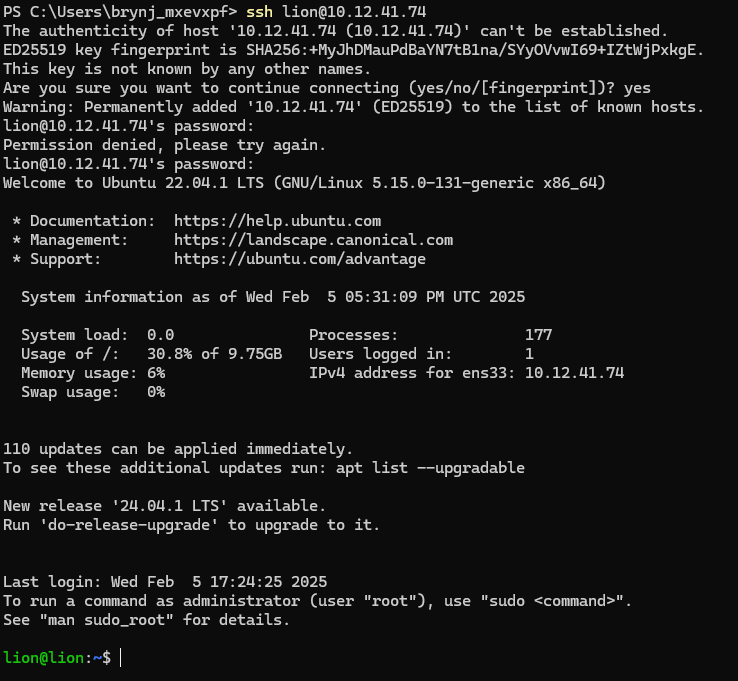Installere Apache
Begynn med denne kommandoen for å oppdatere pakkelisten:
sudo apt update && sudo apt upgrade -y
Deretter:
sudo apt install apache2 -y
Til slutt:
sudo apt update && sudo apt install git -y
Du vil nå ha en testside fra Apache i /var/www mappen kalt html.
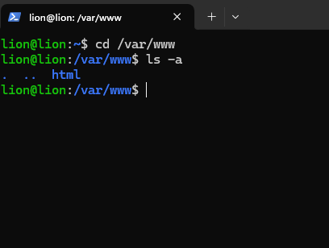Klon github-prosjektet til html-mappen ved bruk av:
sudo git clone [git_repo_link]
Så gir du rettigheter til apache til mappen ved:
sudo chown -R www-data:www-data /var/www/html/myProject
sudo chmod -R 755 /var/www/html/myProject
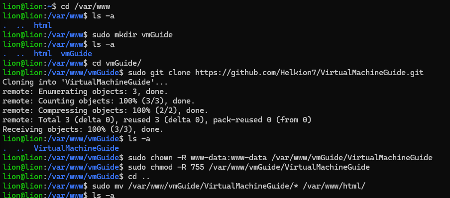
Konfigurere DNS
For å slippe å bruke IP som URL, må vi legge til IP-en i Windows Serveren.
Det gjør vi ved å gå inn i "Server manager" på Windows, deretter trykke på "Tools" og så "DNS".
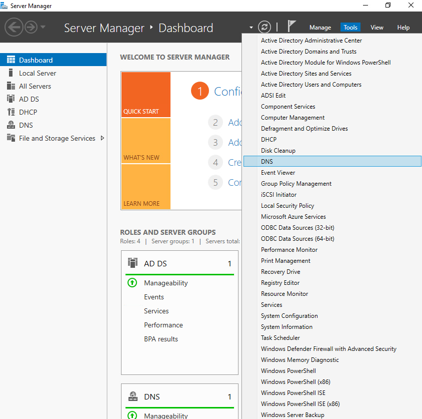Så åpner vi "Forward lookup zones" og høyreklikker på "[serverNavn].ikt-fag.no" og velger "New Host (A or AAAA)".
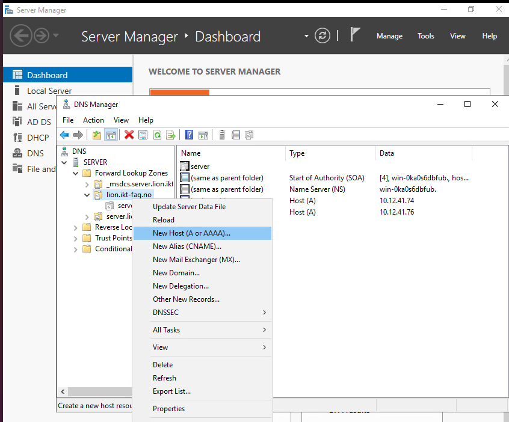Der konfigurerer du den nye hosten og legger inn informasjonen du skal. Når du har trykket på "add host" bør du kunne gå til din FQDN (Fully qualified domain name), og se din nettside.
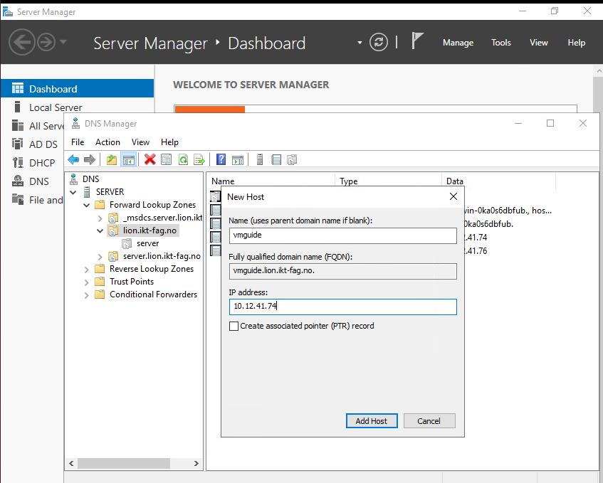